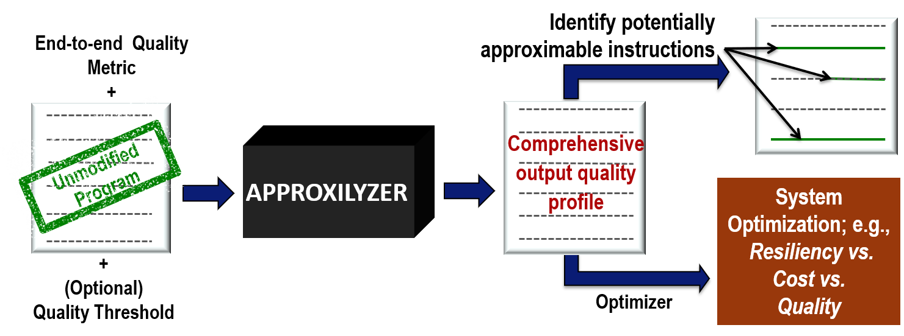

|
Overview
Approximate computing trades off solution quality for benefits such as higher performance, lower energy, or higher reliability. To unlock the potential of approximate computing, we need tools that can systematically predict the impact of an error on output quality. We are working on techniques for approximation as well as an end to end workflow that can systematically enable exploiting such approximations. Our initial focus has been on using approximation to make software more resilient to hardware faults, building on our previous SWAT project that pioneered software driven solutions for hardware resiliency. We are currently collaborating with researchers in software testing, programming languages, and compilers to incorporate resiliency hardening in software as part of a standard test workflow, to develop a hardware-software interface that incorporates approximation as a first order entity, and to translate these ideas into efficient systems as part of our scalable specialization project. We are also collaborating with IBM to study cross-layer approximation across applications and different system layers and with NVIDIA research to mitigate resiliency cost on GPUs for autonomous vehicles.

Recent results
We have developed a tool called Approxilyzer that takes any unmodified general purpose program, and quantifies how virtually every single bit error in a program's execution will impact the quality of the final end-to-end output. We have demonstrated Approxilyzer for two different use cases. First, Approxilyzer uses the output quality profile to automatically identify potential first order approximable instructions in the program that can be used by the programmer for further targeted analysis. Since this is done in an automated fashion and with the absolute minimum burden to the programmer, new applications can now be considered systematically for hidden approximation potential.
Second, since Approxilyzer can determine the quality degradation produced by perturbing each individual instruction in the program, we can use this information to tune output quality with respect to desired resiliency coverage and overheads. For each output quality target, Approxilyzer selectively protects only those instructions that generate unacceptable quality outputs when perturbed by single bit errors. By not protecting the remaining instructions, protection overhead costs can be greatly reduced. Significant resiliency overhead savings can be achieved if the user is willing to tolerate a small loss in quality.
This work builds on our past work on Relyzer, which was recognized as an IEEE Micro Top pick and through a Kuck Outstanding Dissertation Award.
|